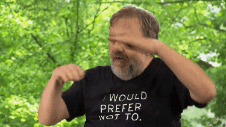

You are in the jungle
and the jungle is massive
_ ____
,-"_`--._;,--.`.
_,-.',-* "-. * `'_
,--" Y ) ) ,-*" `.__,--._ ,.
,' _ `-. ," /_; ___ __ `._,'(_
_.---.' _,-/ /. \ : "--.`-" `. __ `.
,--._,-" __ / \: : : \ _ \ /,-" `. \
,'.-. _,.-" ) : ` \ `.; ,-' `. \ (( `. \
(( `*" ,-.; ,' , : : \ : ` ) )
`' /,.__; ( `-...__| ; './ `-`
` `-...__ ( _,=-. Ƹ̵̡Ӝ̵̨̄Ʒ
`. `-,-"_,--'
Ƹ̵̡Ӝ̵̨̄Ʒ `. ,-"
| /
| :
Ƹ̵̡Ӝ̵̨̄Ʒ | |
| |
| |
| |
| |
| |
| |
| |
| |
| |
| |
| :
: `.
/ Ƹ̵̡Ӝ̵̨̄Ʒ \
_,' .
__,-" '._____ SSt
~~~~~~~6oooooooo~~~~~~~6oooooooo~~~~~~~6oooooooo~~~~~~~6oooooooo~~~~~~~
The jungle is alive.
Nature entwined with itself.
Big, beautiful, psychedelic surprises await.
It was before us and it will be after us.
Death brings life + life brings death.
The jungle understands
that the only thing
that stays the same
is change.
~~~~~~~6oooooooo~~~~~~~6oooooooo~~~~~~~6oooooooo~~~~~~~6oooooooo~~~~~~~
∑VerYtHiπg is branches
"Nature is a big series of unimaginable catastrophes."

The Urban Jungle
This page is here to establish connections, to expose branches that have been growing without you knowing. Branches of a wonderful nightlife community in this urban jungle that is always growing. It's sadly very common for clubs, bars and great bits of nightlife to rise and fall in Saigon, even without COVID making things more difficult. Here's a recent history of some of the hottest hot topics in the nightlife communities who have left their mark on the city in recent years. And some wonders that are still going STRONG!
- 289e -
Off-grid art bar cum collective of qweirdos - hosting events, serving cocktails and disrupting the contemporary art circuit in Saigon - building now home to Russian restaurant, 'ơi blin'.
- ARCAN -
Originally dubbed 'Asian Rave Connection', great soundsystem, great energy, lived fast died young, but enough time to make an impact on the city's party scene. RIP 2020.
- Bass Republic -
Little sister party of the Beats Saigon. Drawing in a loyal crowd and following, most recently at Lush.
- the Beats Saigon -
Legendary party series... pulling in international DJs, notably DJ Zinc, and (we think this is right) Mykki Blanco. But like many events around the world put on looooooong hold. Thanks corona!
- Broma: not a bar -
...is a bar, by the way. Late Saturday night parties, aka, early morning Sunday parties, aka the after party place. Don't stop. Won't stop.
- ERROR:102 -
Hard-hitting, short lived super club, housed just off of the infamous Bùi Viện street, rise to fame during the beautiful gap of time between Vietnam's first and fourth waves of COVID=19.
- GenderFunk -
Queer collective of drag-artists, hosting parties for LGBTQ+ 'PLUS STRAIGHTS' and celebrating queer culture in Saigon and beyond.
- the Lighthouse -
Everyone goes here at least once.
- Nhạc Gãy -
Art collective, rave enthusiasts, pushing the boundaries of Vietnamese nightlife and putting care and compassion for partygoers at the heart of responsible raving in Saigon and beyond.
- Observatory -
One of the most well known, dare we say 'world famous' nightclubs in Saigon, has changed location several times, keeping the same reputation for all those years.
- Opera House -
Not exactly a club or bar (anymore!) but every generation there's a new gravitational pull about this building and the surrounding pavements for gathering and listening to music.
- Piu Piu -
Been through so many changes. Major club, turned restaurant, turns into club because why would it ever stop.
- POWERS -
Legendary, cozy, topfloor bar. Here for a while - in little japan town. Nestled in between sushi restaurants and those special spas. RIP 2021.
- Schiller: river club -
Perfect for sunsets (and sunrises). It's a trip outside Saigon, in every great sense of that word. Family run, special experience kinda place.
---MORE Saigon (and gone) stories MORE---
There are so so soooooo many more places and parties, collectives and communities, short-lived and longer-established projects that have lived and died and meant so much to so many people in Saigon. There are so many that are still active, lurking beneath the cloud of COVID that blankets us all in these strange times. And of course, there will be many more babies, yet to come. This page is here to share and immortalise those stories.
If you have a story to share, please get in touch!
The REAL Jungle
This is not a resource, but a reminder, the jungle is threatened and threatening. The jungle doesn't need you to survive, in fact it needs you to not survive for it to prosper. Nature will win in this war between humanity and nature. But if you want to take a moment to think about how you can help, get in touch with some nature. Get off your phone. Go to nature. Go to the jungle. Show her you love her, and if you're lucky she might give you some of her wisdom.
DISCLAIMER ALERT
The jungle is massive, but the monkeys are few. How long does it take for one monkey to type out the complete works of Shakespeare Saigon nightlife, in the language of html? Saigon Community Radio \..SG_CR../ is here to provide a condensed history... we need your help to complete the storytelling. Tell us what the monkeys need to type and we will do our best to guide them in the right direction. And bear with us, the process is sloth.
stay inside \..SG_CR../
- Go to:= the toilet.
- Go to:= the library.
- Go to:= the balcony.
- Explore:= the jungle.
- Explore:= s p a c e.

There's no place like home.